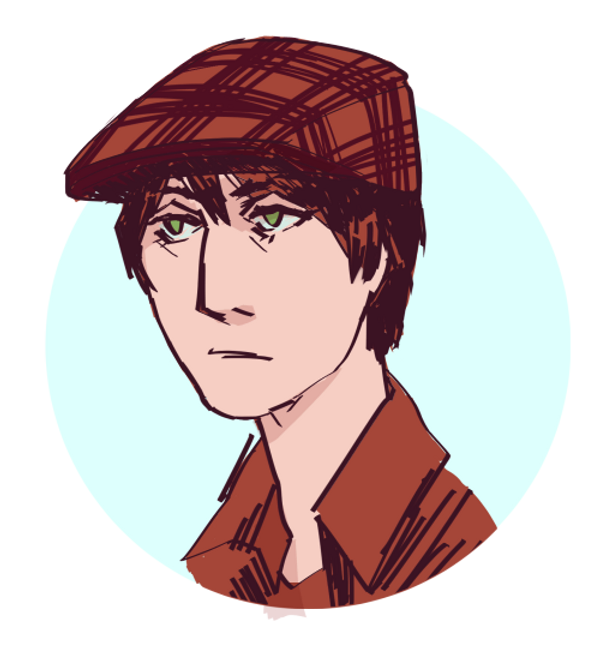

About Me
My name is Rowan Postyeni, a lover of all things language and art. I'm a 2021 graduate of Digipen Institute of Technology, as well as a former Rotary Youth Exchange student of 2015 to Yamato, Kanagawa. I have a passion for playing video games years after everyone else has played them and stopped talking about them.
I'm interested in how we can learn from technology in new ways, and how we can use it to teach people. I believe there's a greatly untapped potential in game development to explore education in an engaging way. In my own endeavors, I enjoy learning procedural systems and the endless potential for modular and node-based work flows.